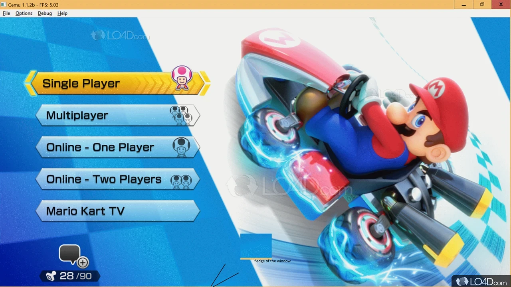

Cemu 用了两年，我把 Wii U 的那些事想清楚了
从折腾转储到把整个 Cemu 目录搬过三台电脑，谈谈这个模拟器到底教会了我什么，哪些当初以为是坑的地方其实绕不开。
两年前在Cemu官网下载了这个模拟器，用到现在两年出头，从 2.0 一路更到 2.6，中间换过两台笔记本、一次台式机，整个 Cemu 文件夹连同 mlc01 跟着我搬了三回。当初装它的动机很简单——旷野之息的 Wii U 版本在模拟器上能跑，而 Switch 版那时候还在纠结要不要买。两年下来，旷野之息通关了，马车 8 刷了几百小时，零的濡鸦之巫女也打完了，那台真·Wii U 从客厅角落彻底塞进了柜子深处。
越用越顺手的地方：那些当初觉得是麻烦的设计
第一次打开 Cemu 最懵的是 Game Paths 和 mlc01 这两个概念。游戏路径还好理解，就是告诉它游戏文件放哪。但 mlc01 是什么？为什么要单独选个目录？那时候我直接点了默认，Cemu 自己在根目录建了一个，没多想。
现在回头看，mlc01 这设计是整个 Cemu 最值得保留的决定。它把系统应用、账号数据、存档、更新补丁、DLC 全塞进一个目录，整个 Cemu 文件夹变成了一个自包含的包。去年搬家换电脑，我直接把整个 Cemu 文件夹拷过去，Game Paths 里的路径因为盘符没变，连更新都省了。第一次启动自动扫描了两分钟，然后游戏列表就出来了——一百多个游戏图标、存档、Shader Cache 全在。这种"拔腿就走"的感觉，是其他同类模拟器很少有的。
keys.txt 那档子事，当初折腾了整整一个周末。我拿着一张 WUD 光盘转储下来的文件丢进 Game Paths，游戏列表就是不出现，以为转储失败了。后来才知道是缺 keys.txt。但更后来才知道，用 WUA 格式转储时 Dumpling 会自动解密，整个 keys.txt 的问题跟你没关系。现在再也不用 WUD/WUX 格式了，转储直接导出 WUA，体积小一半，还省了密钥那堆事。

越用越烦的地方：那些不会自己好起来的小毛病
Vulkan 后端的 Shader Cache 编译问题，从第一次启动到现在没真正解决过。每次打开一个新游戏，加载界面那几十秒的卡顿是逃不掉的——就算导了社区缓存，有些驱动版本还是会重新编译。去年我把驱动从 551 更到 552，Shader Cache 直接失效了，进旷野之息主菜单卡了快两分钟才过。
最烦的是驱动更新的坑。Cemu 对驱动版本太敏感了——新驱动不一定更好。AMD 用户可能更有体会，后来翻Cemu文档才知道，有些 Adrenalin 版本的 Vulkan 实现确实有 bug，画面会出色块或者着色器编译失败。上个月我 AMD 显卡更到 24.4.1，马车 8 里赛道边线全是锯齿，回退到 23.12.1 立刻就好了。NVIDIA 相对稳定，但驱动大版本更新后清 Shader Cache 重新编译是必经流程。
还有 Game Paths 偶尔会被重置——从Cemu下载新版覆盖安装后偶尔会发生，重启 Cemu 发现 Game Paths 列表空了，游戏全消失了。现在养成了一个习惯：每次更新前先截个图记一下 Game Paths，省得忘了哪些目录加过。
每天离不开 vs 碰都没碰的功能
Vulkan 异步着色器编译，开了之后真的回不去了。最早用 OpenGL 的时候，每次进入一个新场景都要等同步编译，旷野之息里第一次爬到塔顶那个卡顿，差点让我放弃模拟器。切到 Vulkan 开异步编译后，编译在后台悄悄进行，画面不卡了——这是 Cemu 从"能玩"到"好用"的分水岭。
Graphic Packs 现在是每天都要调的。分辨率扩展、阴影质量、FXAA 开关，不同游戏组合不同。马车 8 开到 4K 分辨率，旷野之息用中等分辨率 + 更好的阴影，零的濡鸦之巫女因为光影特效多，反而保持原分辨率最稳。Graphic Packs 社区做得太成熟了，几乎每个热门游戏都有现成的推荐配置，直接套用就行。
Wii U GamePad 模拟反而碰都没碰过。 当初觉得 GamePad 是 Wii U 的特色，模拟器应该会用上。但实际玩下来，要么游戏根本用不上 GamePad（马车 8、塞尔达都是电视屏幕为主），要么用鼠标模拟触控屏的体验远不如实机。手柄就够用了，GamePad 模拟成了一个永远躺在设置里的功能。
观感修正：当初高估了什么，低估了什么
高估了 Wii U 独占游戏的"不可替代性"。 当初装 Cemu 就是为了玩 Switch 上没有的 Wii U 独占——零的濡鸦之巫女、异度神剑 X、贝优妮塔 2。两年下来发现，真正让我留下来的不是这些独占，而是那些同时跨了两代平台的游戏在 Wii U 版本上的独特体验。比如马车 8，Wii U 版有几个赛道是 Switch 的豪华版里没有的；比如旷野之息，Wii U 版本的画面色调跟 Switch 不一样，偏冷偏暗，反而有种不一样的质感。
低估了 Shader Cache 的体积增长。 刚装 Cemu 时觉得几百 MB 的缓存文件不算什么。现在 mlc01 加上 Shader Cache 总共快 30GB 了。上次迁移的时候才意识到，缓存文件占了一半多。删掉重来太费时间，留着占空间。现在单独给 Shader Cache 找了个 SSD 分区，眼不见心不烦。
低估了 WUA 格式的重要性。 当初觉得 WUD 无损应该更好，坚持了半年。后来 WUA 体积优势 + 不用 keys.txt 这两个理由让我彻底换了格式。现在想，如果一开始就用 WUA，能少折腾多少事。
去留结论：不会卸载，但有信号出现就该换了
Cemu 现在在我电脑上的状态是——不常开，但不会删。旷野之息通关后很少再碰 Wii U 的游戏，但偶尔想起来会打开马车 8 刷两局。它占了大概 40GB 空间，不算少，但也没到"必须清"的程度。
什么信号出现我会考虑换或者删？大概有三个：
第一，Cemu 停更超过一年。目前来看不太可能，2024 年还在稳定更新，Vulkan 后端还在打磨。但如果哪天作者停了，驱动兼容性问题累积起来，体验会越来越差。
第二，我的主力电脑换成了 Intel 集显或者苹果 Silicon。Intel 集显在 Cemu 上的体验确实不如独显，着色器编译慢、偶尔崩溃；macOS 更是只能走 OpenGL，性能砍一半。
第三，真的把那台 Wii U 修好接上电视。其实这两年真·Wii U 一直在柜子里，坏了一个手柄、电池也鼓了。如果哪天花点钱修一下、配个新手柄，可能真会回去玩实机——毕竟 GamePad 的独特体验是模拟器没法完整还原的。
两年用下来，Cemu 给我的最大感受是：模拟器这东西，技术上是在"替代"实机，但真正的价值其实是让那些被时代遗忘的游戏活在你现在的电脑上。它不是完美的，有这样那样的小毛病，但它让我在 2026 年还能以不折腾的方式玩到 2012 年的游戏，这本身就够了。这套 Cemu 的整理资料我在三个仓库都有留存——GitHub 是主要维护的，Gitee 方便国内访问，GitCode 也同步了一份，多几个备份总不是坏事。